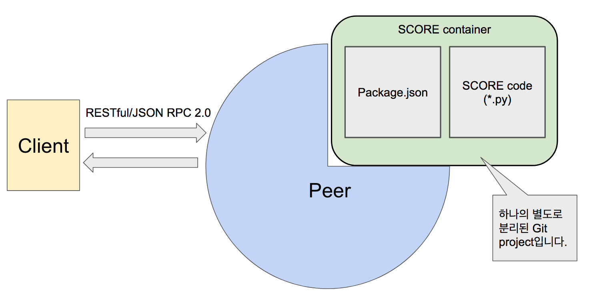
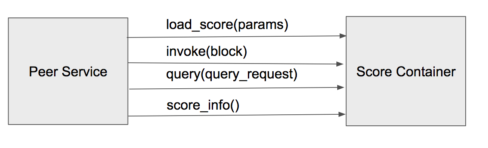

SCORE(Smart Contract On Reliable Environment)¶
SCORE란?¶
- loopchain의 Smart Contract입니다.
- 별도의 VM(Virtual Machine)이 없이 Peer가 돌아가는 Machine위에서 직접 실행됩니다.
- Python Code로 직접 작성할 수 있어 높은 생산성을 가지고 있습니다.
- Blockchain 프로세스와 별도의 프로세스로 동작하면서 다양한 업무의 지원이 가능합니다.
- 각 Peer에서 독립적으로 실행되며, Block이 확정되는 시점에서 실행됩니다.
- Block 별로 실행하며, Blockchain으로 구성하는 비지니스 로직을 구현합니다.
- Python 언어로 개발되며, loopchain의 dependency 를 따릅니다.
SCORE 구조¶

- Github가 현재 SCORE STORE를 대신하고 있습니다.
- SCORE container
Package.json: Function의 정의가 작성되어 있다. 그리고, 실제 SCORE code가 어떤 파일인지 정의되어 있음. Package.json파일에 정의되어 있는 형식으로 Client가 peer와 통신을 합니다.SCORE code(*.py): Python으로 구현된 SCORE용 코드- 해당 Project는 Git을 통해서 배포해야 합니다. 아니면 파일로 해당 프로젝트를 압축해서 따로 올려야 합니다.
SCORE 동작 과정¶
- Tx가 만들어지고 합의가 이뤄집니다.
- 합의에 의해 Block이 검증됩니다.
- 검증된 Block내 Tx 데이터를 가지고 invoke()를 수행합니다.
- invoke()한 결과를 내부 DB(SCORE DB)에 저장합니다.
- invoke() 과정에서 저장한 결과는 query()로 찾습니다.

내부에 여러 실제 작업들에 대한 함수들이 있고 이것을 JSON-RPC 방식으로 호출합니다.(Python으로 작성되어 있음) 작업된 결과는 SCORE DB에 저장합니다.(NoSQL 방식으로 Key-value로 저장)
- invoke() : 검증되고 합의된 transaction 을 가지고 실제 계약 업무를 실행하는 작업
- query() : SCORE DB에 저장된 결과를 읽어오는 작업
- 내부에 여러 실제 작업들에 대한 함수들이 있고 이것을 JSON-RPC 방식으로 호출합니다.
- 실제 구현은 Python으로 작성되어 있습니다.
- 작업된 결과는 SCORE DB에 저장한다.
- NoSQL 방식으로 Key-value로 저장
- 외부에 노출된 함수
- invoke() : 검증되고 합의된 transaction 을 가지고 실제 계약 업무를 실행하는 작업
- query() : SCORE DB에 저장된 결과를 읽어오는 작업
SCORE 실행 순서 설명¶
- RadioStation이 실행할 때에 이용하는
channel_manage_data.json의score_package옵션에서 특정 채널에서 불러올 SCORE를 지정합니다.
{
"channel1":
{
"score_package": "{your_github_id}/contract_sample"
}
}
- docker로 Peer를 실행할 때의
DEFAULT_SCORE_HOST옵션으로 SCORE를 가져올 Git service URL을 지정합니다.
$ docker run -d --name peer0 \
.....
-e "DEFAULT_SCORE_HOST=github.com" \
.....
- Peer가 시작하면서 Git servie에서 SCORE가 있는 Repository[Package.json, SCORE code(*.py)]를 pull합니다.
- Pull받은 코드 중에 Package.json에서 모듈들을 읽어서 다른 Process로 실행합니다.